ТЕОРИЯ МАССОВОГО ОБСЛУЖИВАНИЯ
Расчёт показателей · сравнение методик · влияние ёмкости буфера
Сравнение моделей на общих входных данных.
Формулы отображаются без интернета и без установки LaTeX. В обеих моделях обратная связь отсутствует.
C — аппараты, m — места ожидания; полная ёмкость C+m. Интервалы в одной единице времени. M/M: пуассоновский вход и экспоненциальное обслуживание. G/G: произвольные распределения; здесь реализована заданная приближённая методика, а не точное решение произвольной G/G-системы. Обратная связь отсутствует.
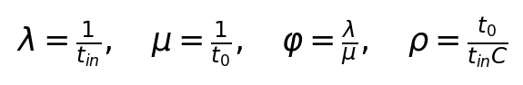
Исходная запись LaTeX — можно выделить и скопировать:
\lambda=\frac{1}{t_{in}},\quad \mu=\frac{1}{t_0},\quad \varphi=\frac{\lambda}{\mu},\quad \rho=\frac{t_0}{t_{in}C}Нормированные веса дают вероятность n заявок. Рекурсия эквивалентна формулам через факториалы и применима при ρ=1.
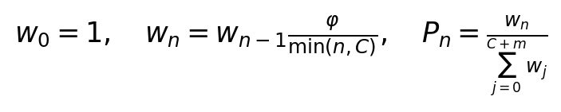
Исходная запись LaTeX — можно выделить и скопировать:
w_0=1,\quad w_n=w_{n-1}\frac{\varphi}{\min(n,C)},\quad P_n=\frac{w_n}{\sum_{j=0}^{C+m}w_j}Простой — система пуста; отказ — все аппараты и места ожидания заняты.
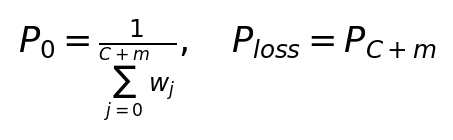
Исходная запись LaTeX — можно выделить и скопировать:
P_0=\frac{1}{\sum_{j=0}^{C+m}w_j},\quad P_{loss}=P_{C+m}λc и A — принятые заявки за единицу времени, q — доля принятых.
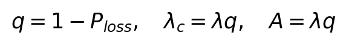
Исходная запись LaTeX — можно выделить и скопировать:
q=1-P_{loss},\quad \lambda_c=\lambda q,\quad A=\lambda qВключают только принятые заявки, находящиеся в системе.
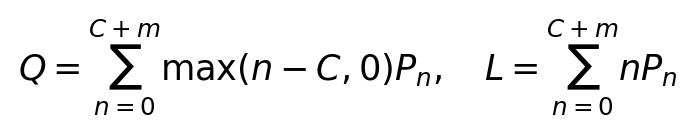
Исходная запись LaTeX — можно выделить и скопировать:
Q=\sum_{n=0}^{C+m}\max(n-C,0)P_n,\quad L=\sum_{n=0}^{C+m}nP_nU — фактическая загрузка; ρ — предложенная нагрузка и может превышать единицу.
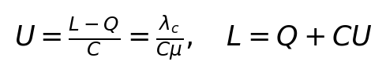
Исходная запись LaTeX — можно выделить и скопировать:
U=\frac{L-Q}{C}=\frac{\lambda_c}{C\mu},\quad L=Q+CUЗакон Литтла для принятого потока: W — ожидание, T — пребывание.
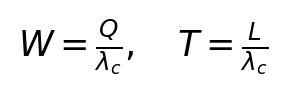
Исходная запись LaTeX — можно выделить и скопировать:
W=\frac{Q}{\lambda_c},\quad T=\frac{L}{\lambda_c}C* — задаваемая коррекция числа каналов; a>0 — параметр учёта распределений. По одним средним и этим параметрам точная общая G/G-модель не определяется. M/M используется как база сравнения, поэтому столбец погрешности показывает расхождение методик, а не доказанную ошибку относительно реальной G/G-системы.
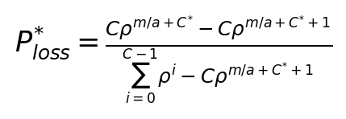
Исходная запись LaTeX — можно выделить и скопировать:
P_{loss}^{*}=\frac{C\rho^{m/a+C^{*}}-C\rho^{m/a+C^{*}+1}}{\sum_{i=0}^{C-1}\rho^i-C\rho^{m/a+C^{*}+1}}Применяется автоматически. Совпадает с непрерывным пределом основной формулы. Отдельный выбор варианта больше не требуется.
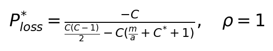
Исходная запись LaTeX — можно выделить и скопировать:
P_{loss}^{*}=\frac{-C}{\frac{C(C-1)}{2}-C(\frac{m}{a}+C^{*}+1)},\quad \rho=1Эквивалентная запись исправленной формулы: числитель и знаменатель умножены на −1.
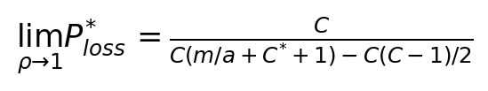
Исходная запись LaTeX — можно выделить и скопировать:
\lim_{\rho\to1}P_{loss}^{*}=\frac{C}{C(m/a+C^{*}+1)-C(C-1)/2}Одинаковые C,m и средние интервалы используются в обеих методиках. При нулевой базе или недопустимой вероятности модели 2 относительная погрешность не выводится. Расчёты без промежуточного округления; вывод с тремя знаками.
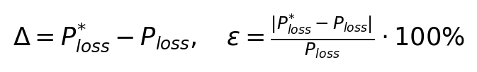
Исходная запись LaTeX — можно выделить и скопировать:
\Delta=P_{loss}^{*}-P_{loss},\quad \varepsilon=\frac{|P_{loss}^{*}-P_{loss}|}{P_{loss}}\cdot100\%Флаг дробного ввода включает смесь соседних целых конфигураций. Для C и m веса перемножаются. Усредняются вероятности и средние количества; времена считаются после усреднения. В модели 2 C* и a сохраняют заданные значения.
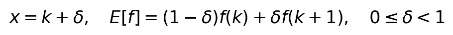
Исходная запись LaTeX — можно выделить и скопировать:
x=k+\delta,\quad E[f]=(1-\delta)f(k)+\delta f(k+1),\quad 0\leq\delta<1